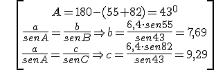
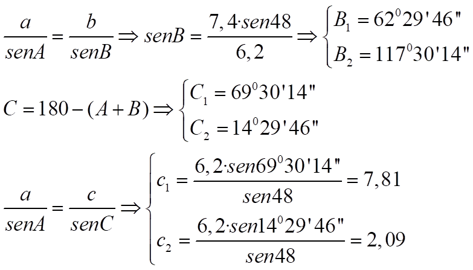
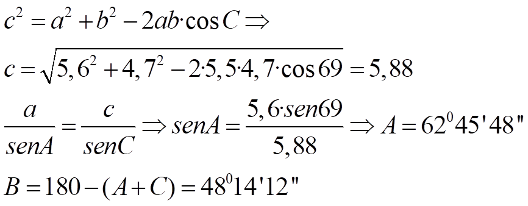
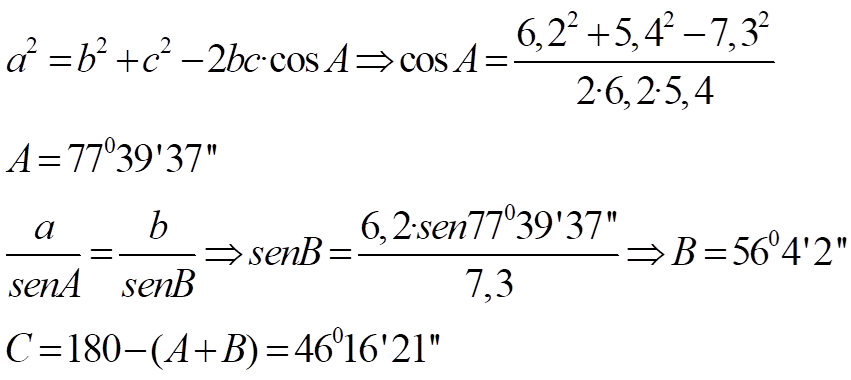
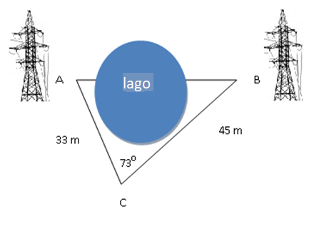
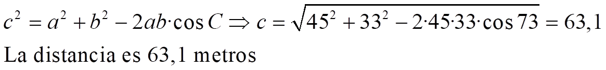

- Caso 1: sabemos un lado y sus ángulos adyacentes
Ejemplo 1: a = 6,4 B = 550 C = 820

\[\begin{align} & A=180-(55+82)={{43}^{0}} \\ & \frac{a}{senA}=\frac{b}{senB}\Rightarrow b=\frac{6,4\cdot sen55}{sen43}=7,69 \\ & \frac{a}{senA}=\frac{c}{senC}\Rightarrow c=\frac{6,4\cdot sen82}{sen43}=9,29 \\ \end{align}\]
- Caso 2: dos lados y un ángulo opuesto a uno de ellos
Ejemplo 2: a = 6,2 b = 7,4 A = 480

- Caso 3: dos lados y el ángulo comprendido
Ejemplo 3: a = 5,6 b = 4,7 C = 690

- Caso 4: los tres lados
Ejemplo 4: a = 7,3 b = 6,2 c = 5,4

Ejemplo 5: dos torres de alta tensión, A y B, tienen un lago entre ellas. Usamos un punto auxiliar, C, para medir la distancia entre ellas y obtenemos AC = 33 m, BC = 45 m y C = 73º. Calcula la distancia entre las torres.
 
Ejercicios:
1.- En 1977, los hombres lanzaron al espacio una sonda para la investigación planetaria, llamada Voyager 2. Después de navegar por el espacio durante dos años, llegó al sistema de Júpiter. En ese momento, el Voyager 2 estaba a 5·108 km de distancia de la Tierra. La distancia de Júpiter a la Tierra fue de 6,288 · 108 km, y el ángulo entre las direcciones de observación del planeta y la sonda espacial fue de 10º. Calcula la distancia que había entre el Voyager y Júpiter.
2.- Desde un punto A podemos ver otros dos, B y C, con un ángulo de 52º29 '. Sabemos que la distancia entre B y C es de 450 m, y entre A y B es de 500 m. Averigua la distancia entre A y C.
Soluciones: 1) 1,6169·108 km; 2) 517,14 m